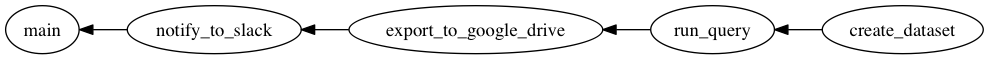
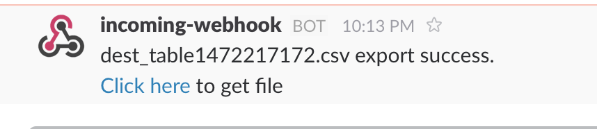

Recipe2: Export BigQuery query result to Google Drive and notify URL to Slack
This guide explain about how to export BigQuery query result into Google Drive file and notify URL to slack by tumugi.
- Execute query on BigQuery and save result to table
- Export table to Google Drive
- Notify Google Drive URL to Slack
This guide assumes you are using Unix like OS, such as Ubuntu, CentOS, or Mac OS X.
Prerequisities
- Ruby >= 2.3
- Bundler
- graphviz
Installation
Create Gemfile and write following contents:
source 'https://rubygems.org'
gem 'tumugi', '~> 0.6.3'
gem "tumugi-plugin-bigquery", "~> 0.3.0"
gem "tumugi-plugin-google_drive", "~> 0.4.0"
gem "tumugi-plugin-webhook", "~> 0.1.1"
And then execute:
$ bundle install
Setup Google Cloud Platform API
Before run this guide's workflow, you have to setup Google Cloud Platform API settings.
Create service accounts
You need a service account to call Google API. Service account is an account that belongs to your application instead of to an individual end user.
How to create a service account see official guide
Create service accounts who has and download
For more detail, see https://cloud.google.com/storage/docs/authentication
Enable Google Drive API
As default, Google Driver API is disabled on your GCP project. So you have to enable it.
How to enable Google Drive API, see Step 1: Turn on the Drive API in official guide
Setup Slack incomming webhook
Create incomming webhook integration on you Slack team.
And get webhook URL like https://hooks.slack.com/services/xxx.
Use it later in workflow definition file.
Create tumugi config file
tumugi config file is a file to write ommon settings for plugins such as API key, private key file path and so on.
You can specify config file path by command line option -c.
If you are not set -c option and current directory include file named tumugi_config.rb, tumugi automatically load the file.
Here is a tumugi config file for this guide. Save this as a file named tumugi_config.rb.
Tumugi.configure do |config|
private_key_file = ENV['GCP_PRIVATE_KEY_FILE']
config.section("bigquery") do |section|
section.private_key_file = private_key_file
end
config.section("google_drive") do |section|
section.private_key_file = private_key_file
end
end
Define workflow by tumugi DSL
You can define workflow above using tumugi DSL.
####################################################
# Recipe2: Export BigQuery query result to
# Google Drive and notify URL to Slack
#
# https://tumugi.github.io/recipe2/
#
# 1. Execute query on BigQuery and save result to table
# 2. Export table to Google Drive
# 3. Notify Google Drive URL to Slack
####################################################
####################################################
# 1. Execute query on BigQuery and save result to table
####################################################
task :create_dataset, type: :bigquery_dataset do
dataset_id "tmp"
end
task :run_query, type: :bigquery_query do
requires :create_dataset
dataset_id { input.dataset_id }
table_id "dest_table#{Time.now.to_i}"
query <<~SQL
SELECT
word,
word_count
FROM
publicdata:samples.shakespeare
WHERE
corpus = "hamlet"
ORDER BY
word_count DESC
LIMIT
100
SQL
end
####################################################
# 2. Export table to Google Drive
####################################################
task :export_to_google_drive, type: :bigquery_export do
requires :run_query
dataset_id { input.dataset_id }
table_id { input.table_id }
output { target(:google_drive_file, name: "#{input.table_id}.csv", parents: ENV['GOOGLE_DRIVE_FOLDER_ID']) }
end
####################################################
# 3. Notify Google Drive URL to Slack
####################################################
task :notify_to_slack, type: :webhook do
requires :export_to_google_drive
url ENV['SLACK_WEBHOOK_URL']
body { { text: "#{input.name} export success.\n<#{input.url}|Click here> to get file" } }
end
####################################################
# Main Task
####################################################
task :main do
requires :notify_to_slack
run { log "Finished" }
end
Save this code as recipe2.rb, then check this workflow.
Tumugi provides DAG (Directed Acyclic Graph) of workflow visualize feature.
show command can visualize DAG (Directed Acyclic Graph) of workflow like:
$ bundle exec tumugi show -f recipe2.rb -o recipe2.png main

Check visualized workflow and it's OK, you can run it.
$ export GCP_PRIVATE_KEY_FILE="/path/to/gcp/private/key.json"
$ export GOOGLE_DRIVE_FOLDER_ID="folder_id"
$ export SLACK_WEBHOOK_URL="https://hooks.slack.com/services/xxx"
$ bundle exec tumugi run -f recipe2.rb main
If workflow runs successfully, you got slack notification like this:
